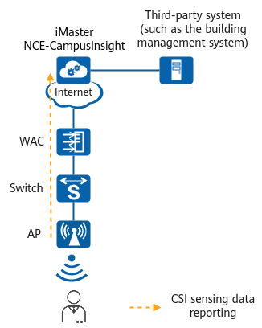

Example for Configuring APs to Report CSI Sensing Data to the Analyzer
Networking Requirements
With CSI sensing technology, APs themselves can send and receive Wi-Fi signals to sense humans. With no need for additional hardware, deployment costs are greatly reduced. Based on Huawei's intelligent network analysis platform iMaster NCE-CampusInsight, the results of sensing and identifying human activities can be displayed on physical and digital maps. After iMaster NCE-CampusInsight is connected to a third-party system, more functions can be implemented, such as intelligent shutdown of electrical appliances and intrusion detection, helping to build converged sensing and communication and energy-saving campus networks.
AP onboarding and STA access have been configured, and AP groups and profiles in the data plan have been created.

Item |
Data |
|---|---|
AP group |
|
AP system profile |
|
WMI profile |
|
Configuration Roadmap
- Configure APs to report CSI sensing data to iMaster NCE-CampusInsight.
- Configure CSI sensing.
Procedure
- Set parameters for interconnection between APs and iMaster NCE-CampusInsight (functioning as a WMI server), and configure APs to report CSI sensing data to iMaster NCE-CampusInsight.
- Create a WMI profile and set parameters for interconnection between APs and iMaster NCE-CampusInsight.
<HUAWEI> system-view [HUAWEI] sysname WAC [WAC] wlan [WAC-wlan] wmi-server name campusinsight [WAC-wlan-wmi-server-prof-campusinsight] server ip-address 10.2.3.4 port 30003 [WAC-wlan-wmi-server-prof-campusinsight] collect-item csi-data enable [WAC-wlan-wmi-server-prof-campusinsight] quit
- Create an AP system profile and bind the WMI profile to it.
[WAC-wlan] ap-system-profile name ap-system [WAC-wlan-ap-system-prof-ap-system] wmi-server campusinsight index 2 [WAC-wlan-ap-system-prof-ap-system] quit
- Bind the AP system profile to an AP group.
[WAC-wlan] ap-group name ap-group1 [WAC-wlan-ap-group-ap-group1] ap-system-profile ap-system [WAC-wlan-ap-group-ap-group1] quit
- Create a WMI profile and set parameters for interconnection between APs and iMaster NCE-CampusInsight.
- Configure CSI sensing.

The CSI sensing function takes effect after being configured in either the AP system profile view or AP view. If CSI sensing is configured in both views, the configuration in the AP view takes precedence over that in the AP system profile view. This example configures CSI sensing in the AP system profile view.
Verifying the Configuration
# Check the CSI configuration in the AP system profile on the device.
[WAC] display ap-system-profile name ap-system ... CSI Switch : enable CSI distance sensitivity : 100 CSI action sensitivity level : high CSI presence enter range : 60 CSI presence leave range : 80 CSI motion detection threshold : 0 CSI presence aging time : 660 CSI presence re-enter delay : 0 CSI report to container : disable CSI report to server : disable CSI report to server address : - ...
Configuring Scripts
- WAC
# sysname WAC # wlan ap-system-profile name ap-system wmi-server campusinsight index 2 csi enable csi distance-range presence-enter-range 60 presence-leave-range 80 csi presence-aging-time 660 csi presence-re-enter-delay 60 wmi-server name campusinsight server ip-address 10.2.3.4 port 30003 collect-item csi-data enable ap-group name ap-group1 ap-system-profile ap-system # return